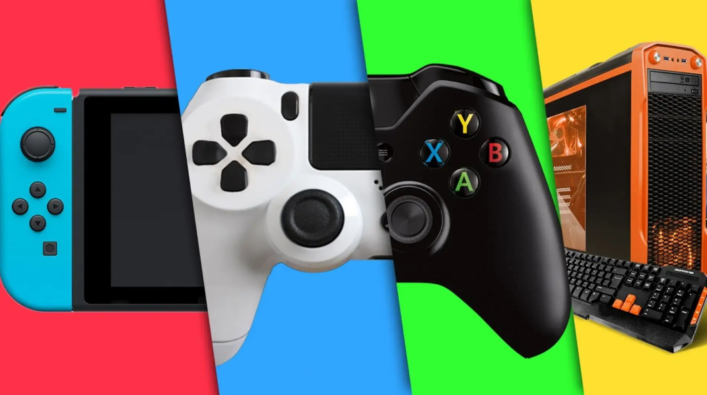

Nelson Scarinci
SSR. Game Developer | Unity Game Developer
About Me
I am a game developer with over 4 years of professional experience working with Unity and C#.
I specialize in gameplay programming and systems development, including multiplayer networking, audio integration, and console porting.
I have contributed to both commercial and educational projects, and I currently teach university-level courses in game programming and virtual environments.
Beyond development, I maintain a strong interest in game design and player experience, which I continue to explore through both professional work and personal projects.
Technical Skills
Professional Projects
Cyborg Immortal – Action MMORPG
Gameplay & Systems Programmer
Client: Santa Barbara Games
Platform: Andorid / iOS
A massively multiplayer online role-playing game for mobile devices.
I was part of the core development team, responsible for building and maintaining key gameplay systems within a continuous QA-driven production environment.
One of the main technical challenges involved server-side optimization and client authority management in a large-scale multiplayer architecture.
- Development of core gameplay systems including: Inventory, Weapons, Tutorials, UI
- Implementation of multiplayer using Mirror Networking for massive concurrency players
- Audio integration using FMOD
- Development of internal web tools in Python for AWS server management
- Backend integration using Unity Gaming Services (UGS)

Project "FAUST" (NDA) – 2D Action Platformer
Porting to consoles - Optimizations - Unity Developer
Platforms: PC / XBox / Playstation 5 / Switch / Steam
I joined the project during its final production stages to adapt the game for consoles, including PlayStation 5, Xbox Series, and Nintendo Switch.
My primary technical challenges involved input system adaptation and memory optimization for Nintendo Switch hardware.
As the title has not yet been released, I also supported general gameplay improvements and performance optimization.
- Platform-specific systems (save system, input system, trophies/achievements, DLC)
- Performance and memory optimization for console hardware
- SDK integration and certification compliance
- Platform-specific bug fixing and technical adjustments
Additional details available under non-disclosure agreement.

Molnlycke – AR App
Developer
Platforms: Android / iOS
An augmented reality application designed to visualize a life-sized 3D model of a vending machine in real-world environments, allowing users to simulate spatial placement before installation.
This project marked my first professional experience working with 3D content and AR technologies.
- Implementation of AR system using Vuforia
- Integration of 3D models
- User Interface development
- Implementation of a video player to demonstrate product usage
Game Disease Minigames – Web Games
Developer
Client: Game Disease
Platforms: WebGL
One of my first professional experiences in game development. I developed a series of web-based minigames featuring online leaderboards as part of the Game Disease NFT ecosystem.
- Rapid prototyping followed by full production development
- Online leaderboard integration using Firebase
- Audio integration (sfx & music)
Play here: Game Disease Web Minigames